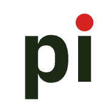

All wordmarks and marks are font-locked (glyph paths, no <text>).
Render identically everywhere, regardless of host fonts.
Red accent dot on the first 'i'. Canonical mark for every marketing context.
Ink only, no accent. Use for fax / print / embroidery / single-color contexts.
Shown at display size and at tiny size (favicon territory).

These two are still text-based (not font-locked yet). They render
correctly as long as IBM Plex Sans is loaded by the host page —
i.e. anywhere brand.css is linked. For external embeds,
use PNG renders or run them through _extract.py when
text-to-path support is added.
Current SVGs use dark ink. For dark-background surfaces, a dedicated ink-white variant would be cleaner than CSS inversion; not generated yet.